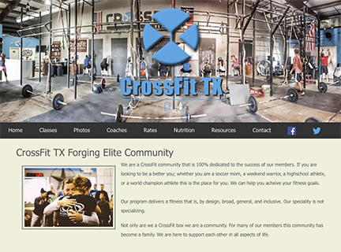
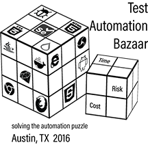

- 
This is a site I designed for my CrossFit box- CrossFit TX The CrossFit TX site was built in 2015 and was the first website I designed. It was designed for my Principals of Web Design and Technology I class. For this site I used only HTML5 and CSS3.
I used Photoshop to edit photograps they already had. I used Illustrator modify existing graphic and also to create new graphics for the site.
Even though this site is the first one that I designed there are a couple of features that I really like. One of those is the navigation bar. I really like the gradient that we decided to use, it was done with CSS instead of making an image in another program and bringing it in. The other feature that I really like is on the coach's page. The owner of the box saw another website that when you scrolled over the pictures they flipped to display information about that picture and wanted it incorporated on the site; I was pleased that even as a new designer I was able to figure out how to make it happen for them.
Link to GitHub Pages site https://barbarabaird.github.io/CFTX/
-
The C. Thompson Photography site is the one I built for my Principals of Web Design and Technology II class. Cheri Thompson (the owner of C. Thompson Photography) is a close friend of mine who is not satisfied with the site she currently has, so she gladly let me build her a new site for one of my class projects. We are currently working to get this site live. For Cheri’s site I used HTML5 and CSS3. Cheri took all of the photographs on the site. I used Photoshop to edit a few of the photographs and also to make the photo collages on the site. Photoshop was also used to make each of the files for the navigation bar. Probably my favorite part of this site is the scrolling picture bar at the top of the home page. Designing this page really taught me a lot and made me realize how much I love designing web site.
Link to GitHub Pages site http://barbarabaird.github.io/Cthompson/
-
BB Crafts is a craft/hobby business that I have had for several years. This site was designed as the final project for my Fundamentals of JavaScript class in 2016. I used HTML5, CSS3, and JavaScript to design this site. I did all of the graphic work on this site as well. I used Adobe InDesign, Animate and Illustrator to do most of the graphic work for the site. This was the first site that I used JavaScript on. JavaScript is used several different places on the site, it is used for the mouse over feature on the navigation bar, it controls the contact form and probably my favorite use is for switching between two heart graphics on the products page. I really had a lot of fun designing this site.
Link to GitHub Pages site https://barbarabaird.github.io/bbcraft/
-
The Love the Rock site was designed for a non-profit group. Love the Rock is a day of service in Round Rock TX. The group needed a site where members of the community could find out information about the event. They needed it to be a simple and clean site that was easy to navigate. I worked as part of a team on this site. I was responsible for the styling of the site. For my part of the site I used HTML, CSS and Bootstrap. It was great to work as part of a team and be able to contribute in big ways while still a student.
Link to the Love the Rock site www.lovetherock.com
-
This is the portfolio site I designed for myself. This site was designed as the final project for my Current Trends and Projects in Digital Media and Web Technology class in 2016. I used HTML5, CSS3 and JavaScript to design this site. For the contact form I used www.jotforms.com. All of the photographs on this site were taken my Cheri Thompson at www.cthompsonphotog.com. I used Adobe Photoshop to edit the photographs, as I needed to. Adobe Illustrator was used in designing my logo and for other design on the site. This site is the first site that is truly my own, there were no design elements that I had to add to satisfy a class requirement. Since this site is my portfolio site I wanted all of the pictures used to be unique to me, so I had Cheri take pictures of my work area. I used this pictures as the background for the home page, the header of each page and the background for the contact from. When designing this site I was able to let me and my personality show, It was great being able to design a site for myself.

-
This is a logo I created for my craft/hobby business. This logo was created in Adobe Illustrator. I designed this logo in 2016 as part of Illustration Graphic class. Since it is for a craft/hobby business, I wanted something fun that also had a crafty feel to it. The colors that I chose were based off of a card I made that everyone loves. I used a flower image that I had and added a background color to it, as well as a drop shadow; I choose a flower because a lot of the cards I make have a flower theme to them. For the border on the top and bottom I created a pattern that I could apply so that I did not have to try and get the spacing right for each square. Designing this logo was a great way to enhance my skills in Adobe Illustrator.
- 
My husband is part of a group of computer programmers/tester that were hosting a conference and they needed a design for the T-Shirt. This is the design that my husband and I came up with. He gave me the idea of what he wanted and the names of the company logos to include and I did all of the design work. He wanted it to look like a Rubik’s cube with the company logo’s filling in the squares on each side. I designed this logo in Adobe Illustrator. This was the first experience I had with using the 3-D feature in Illustrator. I used the 3-D tool to create the cubes and also to rotate the logos that would look like they were part of the cube.
-
This is my logo for my website design business. I designed this in 2016 when I was setting up my portfolio site. This logo was designed in Adobe Illustrator. I wanted a logo that would fit my personality and also go hand in hand with what I did. In order to tie in my business I decided to mimic the look of my monitor when I am using a text editor to write code. The color scheme and also spirals bring in a bit of my personality. The colors are my favorite color (red, green, black), they also happen to be the colors that are in my home office; and the spirals behind the monitor show the fun and crafty side of me. I really think this logo really captures who I am.
 Barbara Baird Design
Barbara Baird Design